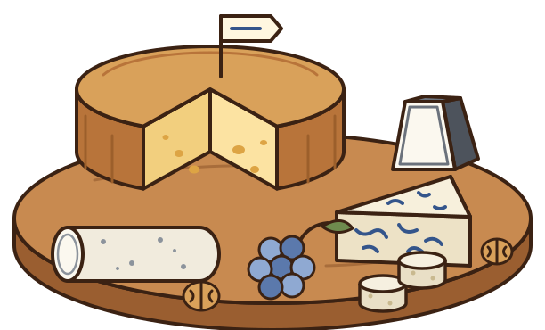
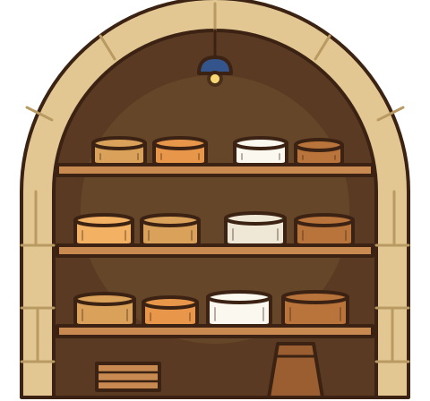
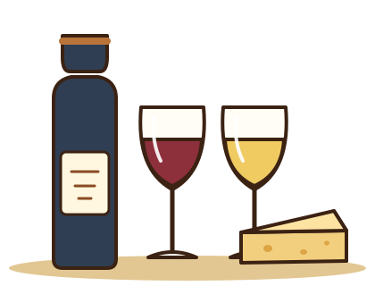
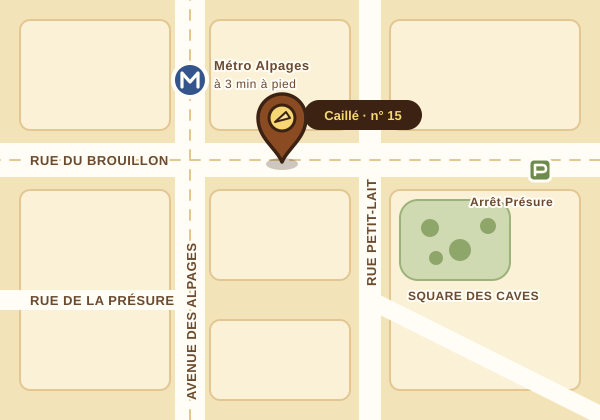

L’Apéro
7,90 € par personne
- 4 fromages, 80 g par personne
- Coupés en bouchées, prêts à piquer
- Raisins frais et noix
Fromager-affineur · Paris 15e
Sous la boutique de la rue du Brouillon, notre cave voûtée garde 140 fromages fermiers au frais, le temps qu’il faut. Au comptoir, on vous fait goûter avant de couper : c’est la règle de la maison.
Mar.–sam. et dimanche matin

Cette semaine Tomme du Brouillon 32,80 € le kg
La cave d’affinage
En 2011, Hélène Caillé a racheté la boutique et découvert, sous une trappe, une ancienne cave à charbon de 1890. Elle l’a nettoyée, voûtée de nouveau, équipée de planches d’épicéa : c’est là que mûrissent aujourd’hui la plupart des fromages que vous achetez chez nous.
 Affinée rue du Brouillon
Tomme du Brouillon
14 mois de cave
Affinée rue du Brouillon
Tomme du Brouillon
14 mois de cave
Fromage de la semaine · du 13 au 18 octobre
Une tomme de montagne au lait cru, fabriquée en Savoie par la famille Ravanel et arrivée chez nous à six semaines. Quatorze mois plus tard, la pâte est souple, dorée, avec ce petit croquant des grandes tommes.
Elle sent la noisette grillée et le beurre noisette. Je la coupe fine, à température, avec une tranche de pain de seigle.
32,80 € le kg · environ 6,60 € la part de 200 g
Me mettre une part de côtéPlateaux sur commande
Dites-nous combien vous serez et ce que vous aimez, on compose le plateau le matin même avec ce qui est à point en cave. Commande 48 h à l’avance, à partir de 4 personnes.
7,90 € par personne
11,50 € par personne
15,90 € par personne
Prochain atelier jeudi 22 octobre, 19 h 30
Deux jeudis par mois, on ouvre la cave à douze curieux : six fromages, quatre vins choisis avec Inès Pradal, sommelière, et toutes les questions que vous n’avez jamais osé poser au comptoir.

On vient pour un morceau de tomme, on repart avec trois fromages qu’on ne connaissait pas. Et ils ont toujours raison.
Le plateau du Dîner pour nos trente ans de mariage : douze invités, zéro reste. Bastien avait même noté qu’une amie était enceinte.
L’atelier bleus et vins doux m’a réconcilié avec le bleu. Je ne pensais pas écrire cette phrase un jour.
Infos & accès
Ouvert du mardi au dimanche matin
| Lundi | Fermé |
|---|---|
| Mardi – samedi | 9 h – 13 h et 15 h 30 – 19 h 30 |
| Dimanche | 9 h – 13 h |
